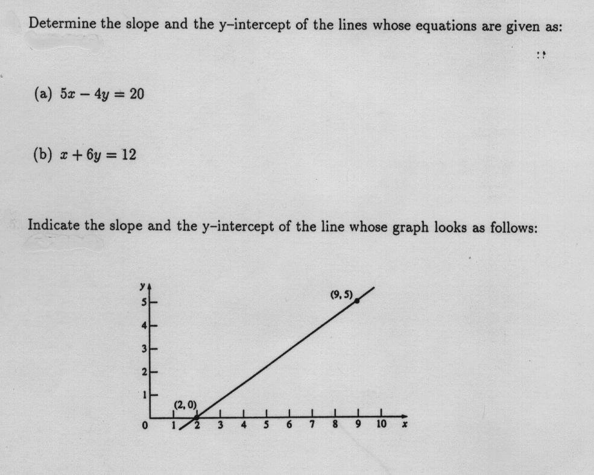
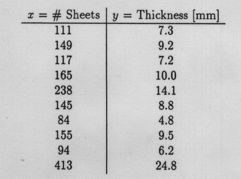
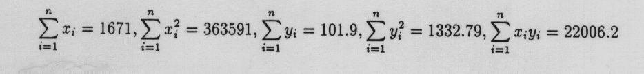

Seattle (WA) 56/46
Bismarck (ND) 73/47
Richmond (VA) 83/57
Raleigh (NC) 85/60
Augusta (ME) 82/54
Tulsa (OK) 85/62
Tucson (AZ) 85/53
Anchorage (AK) 53/42
Denver (CO) 71/43
Park City (UT) 54/31
The first column indicates "forecast high", the second column is "tomorrow morning's low". Please answer the following questions regarding this data set: (9 Points)
- a) Draw a scatterplot of the data, plotting the "forecast high"
on the (horizontal) x-axis and "tomorrow morning's low"
on the (vertical) y-axis.
- b) Describe the relationship you can see in the data.
- c) Calculate SS(x), SS(y), SS(xy) for these 10 data points.
- d) Determine the equation of the least squares line for
this data.
- e) Based on this equation, predict "tomorrow morning's lows"
for given "forecast highs" of 60, 70, 85.
- f) Would you use this equation to predict "tomorrow morning's low"
for Nome (AK), knowing that the "forecast high" is 35?
If so, which value do you get? And what is the predicted
"tomorrow morning's low" according to USA Today? What happened?
- g) Calculate Pearson's correlation coefficient r between x and y. How can we interpret this value for our given data set?

 (3 Points)
(3 Points)

- Draw a scatterplot of Sheets (horizontal x-axis) and Thickness (vertical y-axis).
- Fit a least squares (linear regression) line to the data.
Make clear what your variables stand for.
Also, add this line to your plot in above. It might help to know that:

- What is a possible interpretation of the slope and y-intercept you calculated above? Isn't there something unexpected in the data?
- Calculate Pearson's correlation coefficient r between x and y. How can we interpret this value for our given data set?
- Based on your calculations above, what is the predicted
thickness of 1 sheet, 100 sheets, 400 sheets, and 1,000 sheets.
Which of these 4 predictions are more reliable,
which are less reliable? Why?
http://www.stat.sc.edu/~west/javahtml/Regression.html
This applet demonstrates how a single outlier or influential point can alter the entire least-squares regression line. Add an additional point at the following 15 positions and describe how the regression line behaves (a sketch that compares the original line with each modified line might be helpful). (3 Points):
x = 200 and y = 200
x = 200 and y = 150
x = 200 and y = 100
x = 200 and y = 50
x = 200 and y = 0
x = 100 and y = 200
x = 100 and y = 150
x = 100 and y = 100
x = 100 and y = 50
x = 100 and y = 0
x = 0 and y = 200
x = 0 and y = 150
x = 0 and y = 100
x = 0 and y = 50
x = 0 and y = 0
The regression applet is one of many similar applets that demonstrate simple statistical concepts. These applets are accessible through the GASP Web site at
http://www.stat.sc.edu/rsrch/gasp/
You may also want to experiment with the histogram applet, accessible at
http://www.stat.sc.edu/~west/javahtml/Histogram.html
that shows the effect of changing the number of classes in a histogram. Unfortunately, this applet has a minor bug since the scale on the vertical axis is not always correct. Nevertheless, it is worth a look to see how the shape of a histogram changes, depending on the number of classes (and also the starting point of the first class - but this is not demonstrated in this applet).